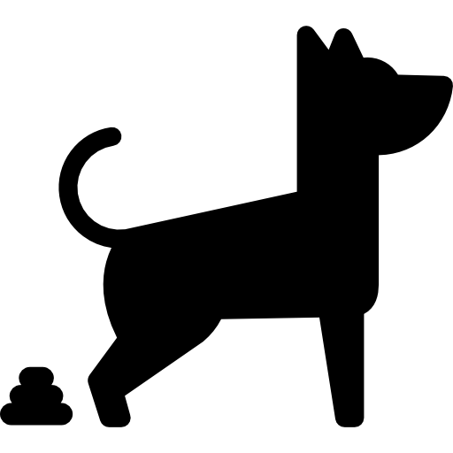

 Desventajas de tener perros
07 / octubre / 22
Contexto
Ahora vamos a ver las ventajas y desventajas de comprar un perro. Esperemos que estos simples consejos te hayan reflexionar y ver si un perro es para ti o no lo es. Que emocion!!
Desarroyo
El tener perros es un tema muy delicado. No solo tiene que ser la persona la cual tiene que ser un buen dueno sino tambien el perro que tiene que aceptar a la persona. Si una de estas dos no esta, no deverias tener perros. Yo, Santiago Ruz Hernandez me propongo ayudarte en descubrir si tu eres un apersona "de perros".
Seguro hayas escuchado la exprecion "El perro se parece a su dueno" lo cual aunque a veces el dueno no se lo tome de buenas porque su perro es un churumusco, es a lo que tu como persona deverias a aspirar. Esa coneccion con tu perro que la gente diga "orasles, te pareses a tu perro oye, y aunque tengas un chiwawa, te lo tomes bien y potencialmente agradesacas el comentario y te hagas amigos con la persona que lo dijo porque el detecto la coneccion extratosferica con tu mascota"
Motivacion
Escoji este tema porque yo siempre he sido gran amante de todos los animales. Los perros en especifico porque ellos son los animales que ves mas comun entre los humanos, y aunque los gatoss tambien son relativamente comunes ellos son unos mugres traidores de #$%^& los gatos no son buenos pero los perros son leales y gentiles y amables y educados y tiernos yy.... mucho mas. Yo creci con perros y yo siento que he desarroyado algo especial con ellos. Siempre que voy a la casa de un amigo el cual su perro es brusco siempre encuentro la manera de que se hagan super amigos. Y es una sensacion tan padre que me gustaria compartirla con todos ustedes.